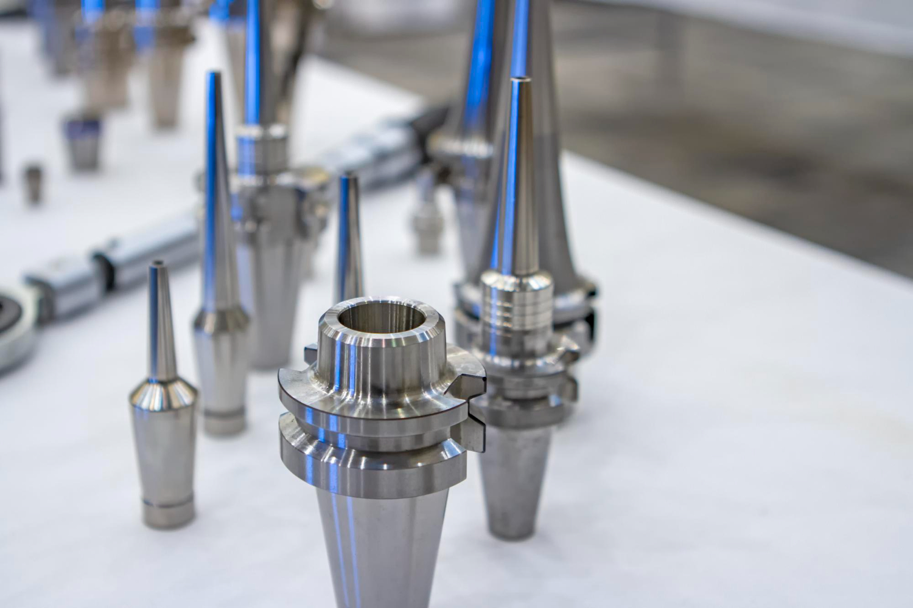

+ Production turning
Citizen Miyano BNE51 MSY
Dual-spindle, dual-turret, with a custom Hydrafeed Rota-Rack. Both ends in one hit, unmanned overnight.
Capacity51 × 100 mm
Tolerance<10 µm
+ Precision CNC · Grimsby
Hand your drawing to a UK shop where the engineer specifying the part can talk to the engineer making it. No portal between you. No account manager translating. No offshore factory you'll never see.
+ Headline specs
+ The job on your desk
When you spec a subcontractor, you stake your name on it. If the batch lands right, nobody mentions you; if it lands wrong, the post-mortem starts with who specced them.
So you've been chasing updates, explaining delays you didn't cause, opening another reject batch — and staying put, because vetting a new supplier felt worse than the cost of staying.
+ Three services

3 and 5-axis up to 1200×600×600mm. Single-setup work other shops bill as two ops.
See milling
Production turning to 51×100mm on the Citizen Miyano BNE51 MSY. Unmanned overnight.
See turning
1–22mm diameter up to 1000mm long on the Star SB20R. Sub-10 micron, unattended.
See sliding head+ The machines
Four shown here. The full list lives on the capabilities page.
Dual-spindle, dual-turret, with a custom Hydrafeed Rota-Rack. Both ends in one hit, unmanned overnight.

20,000rpm Speed Master spindle. Complex 3D in a single setup, up to 600mm diameter.

Turned and milled features in one part, up to 300 × 700 mm. Y-axis with live tooling.
1–22mm diameter up to 1000mm length, bar-fed with tool monitoring. Sub-10 micron, unattended.
+ Sectors we work in
01
Airframe brackets, hydraulic components, structural fasteners. Civil and defence platforms.
02
Suspension hardware, transmission internals, lightweight machined components for race teams.
 03
03
Weapon-system components, vehicle hardware, ground support. Regulated material trace.
04
Subsea connectors, valve bodies, pipeline fittings in duplex, Inconel and exotic alloys.
 05
05
Surgical instruments, diagnostic housings, implant components. Clean handling on request.
Wind-turbine gear components, hydro shafts, solar-tracker hardware. Batch volume ready.
+ How a quote happens
DXF, DWG, STEP or IGES, plus what it's for and the quantity you need.
Detailed, with a real delivery date. Anything on your drawing that could save you time or money, we'll flag it before you commit.
Fully inspected, with ISO 9001:2015 documentation behind every batch. No chase. No surprises.
Faster than that on a one-off prototype where the drawing's clean and the material's in stock.
Send a drawing"They were the first subcontractor in years who came back with a delivery date instead of a window. We hit our build dates because of them."
— Engineering Manager · Tier-1 aerospace · Long-standing Kenworth client
+ Placeholder · awaiting Natalie's 2–3 named testimonials+ Send the drawing
A real delivery date back in 48 hours, and a direct line to the engineers machining your job. Not a portal. Not an account manager.